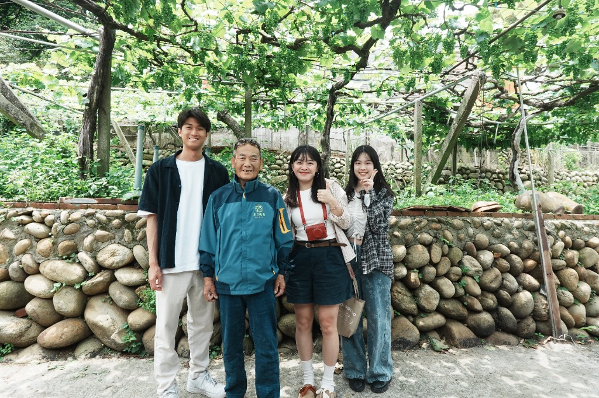

樹生酒莊
Shu-Sheng Winery
Gold Medal Wines
International Award Winner
🍇
🍷
📝
🗺️

FOUNDER
樹生
✓
Create
✓
Capture
✓
Sustain

✦ Waipu Wine Cluster · Group 7 ✦
Why Shu-Sheng Winery Matters
A local survival model of Waipu's wine industry
🍇 🍷 🍇 🍷 🍇 🍷 🍇